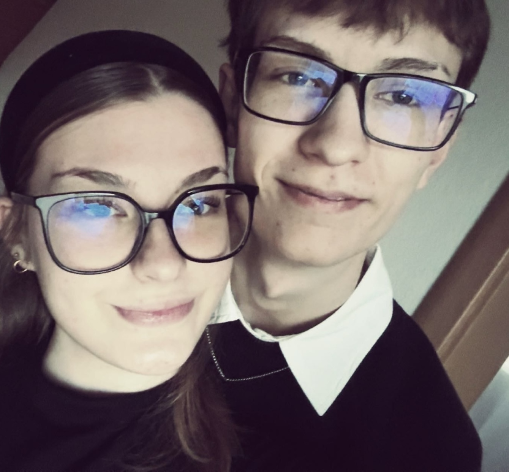

Education
- Konstrukteur EFZ apprenticeship
Hoval, Vaduz, Liechtenstein (2023–2027) - Freiwilliges 10. Schuljahr
Vaduz, Liechtenstein (2022–2023) - Mittelschule Oberau
Feldkirch, Austria (2018–2022)
Application Portfolio
Hello! My Name is Nicola Reschützer, im a motivated Konstrukteur and i just completed my Apprentice as Design Engineer at HOVAL. I am very intrested in Robotics, practical design work and technical things.
About Me
I am recently completed my apprenticeship as a Design Engineer at Hoval in Vaduz, where I develop practical mechanical solutions and gain engineering experience every day. My work is driven by curiosity for automation, interest in industrial robotics, and the ambition to contribute to future-oriented technology in a structured and reliable way.
I enjoy transforming ideas into clear CAD models, functional components, and manufacturable drawings. In team environments, I contribute through careful communication, steady progress, and responsibility for detail. I am especially motivated by tasks where design quality and mechanical function must work together.

CV
I am detail-oriented, structured, and solution-focused. I enjoy solving technical challenges and collaborating with engineering teams. My main interest lies in robotics and automation where reliable mechanical design is essential.
Projects
Developed a compact gripper concept for small automated handling tasks. I created several design variants, compared movement kinematics, and improved the jaw geometry for stable gripping. The final prototype balanced weight, manufacturability, and repeatability during testing.
Modeled and detailed a lightweight joint component for a small robotic arm. Focus areas were stiffness, assembly fit, and practical integration of fastening points. I coordinated design updates with feedback from assembly testing to improve performance and reliability.
Designed a mechanical housing for an automation module with emphasis on cable routing, mounting, and maintenance access. The component set was prepared with complete drawings and revised after prototype review, resulting in a cleaner and more serviceable solution.
Skills
Motivation Letter
Dear Hiring Team at Nova Robotics AG,
I am writing to express my strong interest in a future position as a Mechanical Design Engineer at your company. As a Konstrukteur EFZ apprentice at Hoval, I am building a solid foundation in mechanical design, CAD development, and practical product realization. Through my training, I have learned to work precisely, think in systems, and approach engineering tasks with both responsibility and curiosity.
What motivates me most about Nova Robotics AG is your focus on innovative robotic technology and your clear connection to industrial application. Robotics combines exactly the areas that inspire me: mechanical function, intelligent automation, and real technical impact. I want to contribute to advanced mechanical systems that support reliable robotic solutions and help industries work more efficiently.
During my apprenticeship, I designed components in SolidWorks, created technical drawings, supported prototype development, and took part in assembly and testing activities. These experiences taught me how to connect design intent with manufacturing reality, and how important teamwork is when developing robust products. I am ready to continue growing as a young engineer by taking on greater challenges in robotics.
I would be proud to bring my structured work style, analytical mindset, and enthusiasm for design to Nova Robotics AG in Triesen. Thank you for considering my application portfolio. I would welcome the opportunity to discuss how I can contribute to your team.
Sincerely,
Nicola Reschützer
Contact
Nicola Reschützer
Musterstrasse 12
9488 Schellenberg
Liechtenstein
Phone: +423 12 345 67 89
Email: nicola.reschuetzer@email.com
Date of birth: 31 July 2007
Target role: Mechanical Design Engineer
Preferred company: Nova Robotics AG, Triesen, Liechtenstein